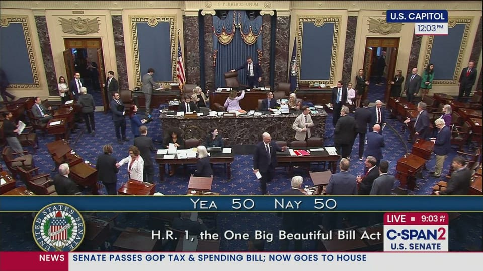

世界苦茶07月02日新闻 | 40条 | 欧洲极端高温导致各种衍生问题

欧洲极端高温导致各种衍生问题 | 美国参议院涉险通过大美丽法案 | 泰国宪法法院暂停首相职责 | 上半年百强房企销售下降一成 | 美国国际开发署彻底关闭
今日三条新闻分析
苦茶数据
美元兑人民币：7.16（昨日7.15，前日7.16）
美元兑日元：143.53（昨日143.66，前日144.25）
上证指数：3456（昨日3452，前日3430）
标普500指数：6198（昨日6204，前日6173）
比特币：106278（昨日106837，前日108574）
布伦特原油：67.15（昨日66.44，前日67.55）
中国新闻
• 中国推动创新药出海 ：中国官方鼓励商业健康保险扩大创新药投资规模，并提出提供价格支持，助力创新药出海。中国国家医保局和国家卫生健康委制定《支持创新药高质量发展的若干措施》，提出鼓励商业健康保险公司通过创新药投资基金等多种方式，为创新药研发提供稳定的长期投资，培育支持创新药的耐心资本。官方也会增设商业健康保险创新药品目录，重点纳入创新程度高、临床价值大、患者获益显著且超出基本医保保障范围的创新药，推荐商业健康保险和医疗互助等多层次医疗保障体系参考使用。通过协商合理确定商保创新药目录内药品结算价，探索更严格的价格保密机制。
• 台军称解放军进第二岛链 ：台湾国防部通报中国大陆海军的演训规模和范围已扩张至第二岛链，并研判解放军将持续提高在其他海域航训的次数。据台湾《联合报》报道，台湾国防部参谋本部情次室情研中心管制长罗正宇上校星期二在记者会上说，中国大陆解放军今年6月首次派遣两艘航母山东舰和辽宁舰进入西太平洋海域航训，演训规模和范围已扩张至第二岛链，不仅引发周边国家关切及不安，也对印太地区带来军事压迫及安全挑战。罗正宇称，台军研判解放军未来将提高在其他海域的航训次数，挑战印太地区以秩序为基础的区域稳定情势。
• 澳门博彩收入大增 ：大量游客涌入观看粤语演唱会和其他娱乐活动，提振澳门博彩业，让澳门6月博彩收入同比大增19%，超出分析师预期。彭博社引述澳门博彩监察协调局星期二公布的数据报道，澳门6月博彩收入达211亿澳门元，同比增幅高于分析师预估中值9.4%，也恢复至2019年冠病疫情前的88%水平。花旗分析师蔡乔治在报告中指出，粤语歌坛巨星张学友演唱会从6月中旬持续至7月初，带动了澳门6月的博彩业表现。张学友首场演唱会当天，澳门高端赌客数量同比增长16%，人均下注金额增长36%。
• 习近平谈全国大市场 ：中共总书记习近平在主持中央财经委员会会议时说，纵深推进建设全国统一大市场，需治理企业低价无序竞争，规范政府采购和招标投标与地方招商引资等方面。据新华社报道，中共总书记、中国国家主席、中央军委主席、中央财经委员会主任习近平星期二上午主持召开中央财经委员会会议，研究纵深推进全国统一大市场建设、海洋经济高质量发展等问题。习近平在会上强调，建设全国统一大市场是构建新发展格局、推动高质量发展的需要，要认真落实中共中央部署，加强协调配合，形成推进合力。推进中国式现代化必须推动海洋经济高质量发展，走出一条具有中国特色的向海图强之路。
• 南阳强降雨致2死6失联 ：中国河南省南阳市西峡县遭遇极端强降雨，导致下游蛇尾河猛涨。官方数据显示，目前已有两人死亡，六人失联。当地老界岭景区也因部分设施遭强降雨损坏，宣布从星期二起暂时闭园。综合央视新闻和新华社报道，西峡县太平镇、二郎坪镇星期一晚上9时至隔天凌晨零时遭遇短时极端强降雨，雨量达208.3毫米，过程累计降雨量达225.3毫米，导致下游蛇尾河猛涨，部分设施损毁，有群众被困。
• 国台办称大陆是台商后盾 ：中国大陆国台办副主任潘贤掌在一场台企会议上说，大陆是全球第二大经济体，发展优势明显，为台商提供更多机遇，始终是台商防御风险的可靠后盾。据大陆国台办官网消息，潘贤掌星期一在甘肃省兰州市出席全国台企联第六届会员代表大会第三次会议并讲话。他指出，全国台企联多年来团结广大台商台胞，为促进两岸关系和平发展、融合发展，推进统一进程，作出了积极贡献。
• 高丽航空疑重启上海航线 ：美国媒体报道，朝鲜高丽航空一架客机星期天晚往返中国上海，引发外界关注是否重启该航线。专门报道朝鲜新闻的美国网站NK新闻星期一引述航班线路追踪网站FlightRadar24的数据报道称，朝鲜的安东诺夫安-148型客机中，注册号为P-671的高丽航空航班星期天从平壤顺安国际机场起飞，经过约两小时飞行，于当晚10时许抵达上海。该航班之后在星期一凌晨零时47分起飞，于凌晨2时10分抵达平壤。这是自冠病疫情暴发以来，高丽航空第三次执飞平壤至上海往返航线，也是今年的第二次。去年12月，高丽航空一架图-204-300机型的航班曾往返上海和平壤。今年4月平壤国际马拉松期间，注册号为P-672的安-148型航班也曾搭载外国参赛选手往返上海。
• 中方制裁菲前参议员 ：中国宣布对菲律宾前参议员托伦蒂诺实施制裁，指他在涉华问题上表现恶劣。据中国外交部官网星期二消息，外交部发言人称，一段时间以来，菲律宾个别反华政客出于一己私利，在涉华问题上采取了一系列恶意言行，损害中国利益，破坏中菲关系。中国政府捍卫国家主权、安全、发展利益的决心坚定不移。发言人说，中国决定对在涉华问题上表现恶劣的菲律宾前参议员托伦蒂诺实施制裁，禁止他入境中国大陆和香港、澳门。
亚太印太新闻
• 日本创史上最热六月 ：日本气象厅说，日本经历有记录以来最热的六月，而气候变化正引发全球范围内的酷热热浪。法新社报道，日本气象厅星期二说，日本六月的月平均气温是自1898年开始统计以来的最高值。气象厅说，由于6月份高温持续影响该地区，月平均气温比往年高出2.34摄氏度。
• 彭振声庭审妻坠楼震惊台岛 ：台北市前副市长彭振声星期二因前市长柯文哲京华城案赴台北地方法院出庭，妻子却于高雄坠楼身亡，震惊台湾舆论，民众党支持者到法院前集结声援，柯文哲则对受案件牵连的团队及家人致歉。涉入京华城弊案的柯文哲、威京集团主席沈庆京，指控检方以“不正讯问”方式，迫使彭振声、台北市前兵役局长朱亚虎认罪。本案休庭近一个月后，星期二在台北地院召开程序审理庭，勘验侦讯音档内容，彭振声当天上午也到庭说明。彭振声上午在法庭内等候开庭时接到家人电话，得知妻子在高雄住处坠楼身亡的噩耗，当场崩溃痛哭，哭喊着“检察官要我的命！检察官的良心在哪里？”还说他在看守所本来就想轻生表达清白。
• 彭振声庭上情绪崩溃 ：卷入台湾京华城容积率弊案的前台北副市长彭振声得知妻子轻生后说，他先前会认罪是想要拼交保出来，让妻子安心，但“现在她不在了，我也没顾虑了”。据台湾《联合报》报道，台北地方法院原定星期二上午勘验彭振声的侦讯光碟。彭振声坐在法庭内被告席和律师交谈，开庭前接到妻子噩耗。彭振声起初愣住，之后情绪失控放声痛哭，并对着在法庭内的检察官骂“良心在哪里”，不断喊“我不想活了”“我是被冤枉的，我们国家怎么变成这样”“检察官怎么那么可恶！”
• 赖清德批在野党删军费 ：台湾总统赖清德继续展开“团结国家十讲”，批在野党冻删国防预算，国民党立法院党团回应时指责赖清德进行总统级造谣。赖清德星期二展开第四讲“国防”，指在野党先前在立法院冻删国防预算，“让国际社会误解台湾没有保护自己国家的决心”。据台湾总统府官网发布的新闻稿，赖清德称，今年国防预算遭立法院冻删总额为史上最高，删除共计84亿元新台币，并且一度被冻结达899.4亿元，其中也包含海鲲号潜舰等。
• 韩国检察总长请辞 ：有消息指，韩国检察总长沈雨廷已提请辞职。韩联社星期二引述法律界人士消息称，沈雨廷前一天已表明辞职意向，卸任仪式将于星期三在大检察厅举行。6月29日，韩国总统李在明提名共同民主党国会议员郑成湖为法务部长官，任命律师奉旭为总统府民政首席秘书。韩国舆论认为，这表明新一届政府迅速推进检察系统改革的决心，改革或包括分离检察机关的调查权和起诉权等核心内容。
• 台军演纳入灰色骚扰情境 ：台军年度“汉光41号演习”将于7月9日展开，为期10天九夜，今年演习首度纳入灰色地带袭扰情境，进一步贴近实战威胁。综合台湾《联合报》和ETtoday新闻云报道，台湾国防部作战计划室联合作战处长董冀星星期二在记者会上说，今年演习情境以国土防卫为主轴，并涵盖反封锁、反隔离等多种设想，全面模拟解放军可能的军事行动。根据国防部规划，演习将分阶段进行：7月9日至11日为“常态危机处理阶段”，针对灰色地带骚扰情境进行第二级与第一级加强戒备；12日进入备战部署阶段，战备等级将调升为应急作战；13日至18日则为全面作战阶段，其中内容涵盖13日联合反登陆、14日滨海暨滩岸战斗、15至16日纵深防御，以及17至18日的持久作战演练。
• 佩通坦被暂停职权 ：泰国宪法法院宣布暂停首相佩通坦行使首相职权，佩通坦称接受法院判决，并强调自己从未有过恶意，她已尽全力为国家效力。佩通坦星期二说，她接受宪法法院的决定。“我想向所有为此感到不安的人们道歉，我将继续以泰国公民的身份为国家服务。”她也说，她将在这期间提交声明，以证明自己。“我全心全意为国家效力，维护国家主权。”
• 尹锡悦拒出席二次传讯 ：韩国前总统尹锡悦星期二拒不接受内乱独立检察组的第二次传讯，上午9时未现身独检组办公室。韩联社报道，独检组将立即重新安排到案日期，再向尹锡悦发送传唤通知。独检助理朴志英前一天说，若尹锡悦7月1日不到案，将立刻重新安排到案日期，可能是7月4日或5日。若尹锡悦届时仍拒不响应，独检组将依法提请法院签发拘留令。届时，除6月25日被法院驳回的拘留令中所列出的“阻挠公调处执行拘留”和“删除加密通话记录”外，独检组还将追加新的指控。鉴于独检组6月28日首次传唤尹锡悦时已就“戒严前后国务会议决议过程”等情况进行了初步调查，预计届时或增加与此相关的指控。
科技新闻
• 受极端高温天气影响 法国关闭核电站： 当地时间周一，受极端高温天气影响，位于法国南部的戈尔费什核电站暂时关闭，以防作为反应堆冷却水来源的加龙河河水过热。公司说，这座核电站 6月29日晚关闭。公司没有透露关闭时长。面对今夏欧洲第一波热浪，加龙河河水温度6月30日可能升至28摄氏度。这波热浪预计持续至本周周中，法国多地最高气温可达到四十摄氏度。位于法国西部的布拉耶核电站 6月29日也减少了发电量，以免吉伦特河口河水温度过高。另外，出于同样的担心，公司考虑关闭南部的比热核电站。依据法国电力公司说法，上述措施对公司发电的影响可以忽略不计。
• 美参院放行AI监管权 ：美国参议院以压倒性票数通过表决，决定取消总统特朗普全面减税与支出法案中为期10年的联邦禁令，该禁令原本禁止各州自行监管人工智能。路透社报道，参议院星期二以99票对1票通过共和党参议员布莱克本提出的修正案，将这一禁令从法案中删除。此次行动发生在参议院针对“大而美”法案进行辩论和表决的过程中，议员们就法案提出多项修正案，共和党人希望最终推动立法通过。
• TikTok美业务收购细节曝光 ：知情人士透露，美国总统特朗普所说的TikTok美国潜在买家，其实是由甲骨文、黑石集团和风险创投公司Andreessen Horowitz组成的财团。彭博社报道，这个财团此前与TikTok母公司字节跳动接近达成协议，但北京因为特朗普4月大加关税而拒绝批准。根据潜在协议，字节跳动将剥离TikTok的美国业务，新的外部投资者将拥有其中50%的股份，现有投资者则将持股约30%；字节跳动在这家新美国合资企业中的持股将降至略低于20%。
• 华为百度同日开源大模型 ：中国两大科技巨头华为和百度在同一天宣布开源人工智能大模型，反映中国AI大模型生态正面临日益激烈的竞争格局。综合第一财经和中新社报道，华为星期一宣布，正式开源盘古70亿参数的稠密模型、盘古Pro MoE 720亿参数的混合专家模型和基于昇腾的模型推理技术，邀请全球开发者、企业伙伴及研究人员下载使用。这是华为首次开源盘古大模型。华为方面说，此举是华为践行昇腾生态战略的又一关键举措，推动大模型技术的研究与创新发展，加速推进AI在千行百业的应用与价值创造。
• 微软与英超达成合作 ：微软与英格兰超级足球联赛达成为期五年的战略合作伙伴关系，协助英超将其核心科技架构迁移至Microsoft Azure云端平台，并广泛应用人工智能技术以提升球迷体验。根据双方周二公布的声明，英超官方网站、手机应用程序及梦幻足球游戏将导入微软AI驱动的聊天机器人，为用户提供实时互动、比赛数据及个性化内容推荐。甲骨文之前曾为英超提供云端运算服务，但该协议已于今年稍早赛季结束时到期。AI在体育联盟和体育娱乐公司中引起了强烈共鸣，因为他们希望简化大量数据以吸引更多观众并提升参与度。
• 苹果电脑出货量大增 ：根据机构 Canalys 最新发布的数据，2025年第一季度，苹果公司在美国主要电脑供应商中创下了最高的同比增长记录，出货量同比增长了 28.7%，市场份额也从 14.2% 上升至 16.0%。今年第一季度，美国市场的台式机和笔记本电脑出货量达到了1690万台，与去年同期相比增长了15%。苹果出货量为270.5万台，较2024年第一季度的 210.2万台有了显著提升。这一增长幅度在前五大供应商中位居首位，超过了联想 19.9% 的增长，也远远高于戴尔的8.3%和惠普的13.1%。苹果也是本季度五大供应商中唯一一家在美国市场份额增长超过 1.5 个百分点的厂商。
财经新闻
• 华为撤诉被驳回将受审 ：美国联邦法官驳回了中国华为公司撤销指控的请求，这意味着这家中国无线设备制造商明年必须在纽约接受刑事审判。据彭博社报道，美国地区法官安·唐纳利星期二驳回了华为关于起诉书的16项指控中有13项证据不足的说法。唐纳利在长达52页的裁决中写道：“撤销指控是一种特殊的补救措施，只适用于涉及基本权利的极其有限的情况。”
• 宁德时代重庆产线投产 ：宁德时代宣布在问界超级工厂的两条CTP2.0高端电池包产线正式投产。据科创板日报消息，这是宁德时代在重庆布局的首个基地。这也是宁德时代首次采用“厂中厂”合作模式，为问界系列车型本地化生产供应动力电池系统。
• 恒大财富微博讨债 ：已停更七年的恒大财富官方微博突然发文，要求恒大集团创始人许家印还钱。恒大财富星期二在微博发文称：“许家印还钱！品牌部还有人上班不？”该账号的认证为恒大金融财富管理有限公司，但该企业的资质未经过年审。该账号上一次发博是在2018年3月。红星资本局星期二曾私信“恒大财富”账号，但没有收到回复。
• 上半年房企拿地超五千亿 ：一份机构榜单显示，今年上半年，中国重点房企拿地总额5065.5亿元人民币，同比增长33.3%。据中新网报道，中指研究院星期二发布《2025年上半年全国房地产企业拿地TOP100排行榜》。从企业视角看，上半年拿地企业仍以央国企为主，拿地金额前十企业中八家为央国企。
• 上半年百强房企销售降一成 ：中指研究院数据显示 ，今年上半年，TOP100房企销售总额为18364.1亿元，同比下降11.8%，降幅较第一季度扩大2个百分点。6月单月，TOP100房企销售额同比下降18.5%，较5月单月降幅扩大1.2个百分点。一二线城市为核心房企主要业绩贡献来源。
俄乌战争
• 五角大楼审查军事援助后，美国将停止向乌克兰运送部分承诺的武器： 美国官员周二表示，由于担心自身武器库下降过多，美国将暂停向乌克兰运送部分武器。这对试图抵御俄罗斯不断升级的攻击的美国来说是一个挫折。此前，拜登政府曾承诺向乌克兰提供某些军火，以在这场持续三年多的战争中增强其防御能力。此次暂停运送反映了唐纳德·特朗普总统执政期间一系列新的优先事项，此前国防部官员审查了美国目前的武器库并提出了担忧。白宫发言人安娜·凯利在一份声明中表示：“在审查了我国对全球其他国家的军事支持和援助后，我们做出了这一决定，将美国的利益放在首位。美国武装部队的实力毋庸置疑——问问伊朗就知道了。”
• 俄罗斯任命的卢甘斯克领导人列昂尼德·帕谢奇尼克6月30日晚表示，卢甘斯克已完全处于俄军的控制之下： 乌克兰尚未就此置评。若得到证实，这将是俄乌战争3年多来乌克兰有第一个州被俄罗斯完全占领。
• 波兰边境临时控移民 ：波兰总理图斯克说，波兰将于7月7日在与德国和立陶宛的边境实施临时管控，以遏制非法移民。路透社报道，图斯克星期二在内阁会议上说：“我们认为，恢复临时管控是必要的，以将跨越波兰—德国边境的非法移民流动降至最低。”图斯克领导的自由派政府此前一直遭到反对党指责，称政府接收大批从德国遣返的非法移民。政府当时辩称，遣返人数有限。
• 俄否认拖延乌克兰谈判 ：克里姆林宫否认美国乌克兰问题特使关于俄罗斯拖延和谈的说法，并称俄罗斯已经履行迄今为止谈判达成的所有协议。路透社报道，克里姆林宫发言人佩斯科夫星期二说，俄罗斯感谢美国团队帮助促成谈判，但莫斯科并没有拖延。他说：“没有人在这里拖延任何事情。我们当然支持通过政治和外交手段，达成我们试图通过特别军事行动实现的目标，因此我们不想拖延任何事情。”
• 报告称美阻俄乌和谈 ：一份中国智库报告称，由于美国的急功近利，俄乌问题的政治解决不进反退。据中新网报道，中国欧洲研究智库网络年度报告选题暨《俄乌持久和平与欧洲安全重建》报告发布会星期一在北京外国语大学举行。发布会上，报告作者清华大学教授达巍、上海国际问题研究院研究员赵隆、中国社科院欧洲研究所研究员赵晨以及北京外国语大学区域与全球治理高等研究院讲师冯怡然，分别从美国角色变化及其影响、乌克兰身份重构、欧洲安全秩序重建以及中方作为利益攸关方的关切等角度，分享报告内容。
国际新闻
• 特朗普减税法案过参院 ：经过数天的辩论和投票之后，美国国会参议院周二终于通过了特朗普支持的全面减税和支出法案，该法案目前已提交众议院，预计众议院将于本周就该法案进行投票，但并不能保证成功。参议院当天上午以51比50的投票结果通过了这项全面减税和支出法案。同时担任参议院议长的共和党籍副总统万斯在50票赞成、50票反对的“平票”情况下，投出了打破僵局的一票，该修正案最后以51比50的投票结果获得通过。今年五月份，一些众议院共和党人本就不情愿地投票支持了该法案，随着法案进一步削减医疗、福利补助及绿色补贴等支出，以及将联邦债务上限再提高5万亿美元，可能会遭到更多议员的反对。
• 美国关闭国际开发署 ：美国特朗普政府星期二宣布，即日起正式关闭运营近64年的美国国际开发署。路透社报道，美国国务卿鲁比奥发表声明说，美国国际开发署7月1日起正式停止执行对外援助任务，部分符合特朗普政府政策的剩余项目移交给国务院实施。声明说，美国国际开发署数十年来支出超过7150亿美元，用美国纳税人的钱创建一个“遍布全球的非政府组织产业综合体”，但自1990年代冷战结束以来，其工作“收效甚微……受援助地区发展目标很少能够实现，不稳定局势往往加剧，反美情绪只增不减”。
• 特朗普或驱逐马斯克 ：美国总统特朗普称，可能会考虑驱逐南非出生的世界首富马斯克，后者近来猛烈抨击特朗普提出的“大而美”减税和支出法案。法新社报道，特朗普星期二在白宫被问及是否会考虑驱逐马斯克时，他说：“我不知道。我们得看一下情况。”这也意味着，特朗普并没有立即排除这个可能性。
• 法国热浪84省发橙警 ：法国全国四分之三地区星期一的最高气温超过35摄氏度，局部地区气温高达40摄氏度，已有84个省份发布热浪橙色警戒。新华社报道，据法国气象局介绍，本轮热浪自6月19日以来席卷法国，目前仍在持续。7月1日将是本轮热浪中最热的一天，最高气温预计达到36至40摄氏度，局部地区或达41摄氏度，将有16个省份发布热浪红色警戒。预计7月2日起，英吉利海峡和大西洋沿岸地区气温将开始明显下降。直到本周末，气温下降趋势将自西向东逐渐蔓延至全法，但地中海附近地区的高温天气可能持续。
• 意大利拟发50万工签 ：意大利将在2026年至2028年向非欧盟公民发放近50万个新工作签证。路透社报道，意大利内阁星期一宣布这项措施时说，这是政府扩大合法移民渠道以应对劳动力短缺的战略的一部分。2026年将允许16万4850名非欧盟公民居留，目标是到2028年累计新增居留名额达到49万7550个。
• 英乐队因言论被美撤签证 ：英国说唱乐队二人组“鲍勃·维兰”被指在演出中发表“仇恨以色列”的言论，被美国撤销签证。法新社报道，美国常务副国务卿兰多星期一在社媒平台X贴文说，鲍勃·维兰乐队的美国签证已被吊销。他说：“我们国家不欢迎美化暴力和仇恨的外国人。”这支乐队原计划11月到美国巡演。
• 黑客称掌握特朗普核心圈邮件 ：与伊朗有关联的黑客威胁将披露更多从美国总统特朗普核心圈子窃取的电子邮件，此黑客团伙在美国2024年总统选举前已向媒体泄露其中一批电邮。这群化名为“罗伯特”的黑客于星期天和星期一两天与路透社进行了在线聊天。他们宣称拥有大约100GB的电邮，这些电邮来自白宫幕僚长怀尔斯、特朗普律师哈利根、特朗普顾问斯通以及特朗普封口费案的色情片女星、现为反特朗普人士的丹尼尔斯。
• 欧盟否认让步数字立法 ：欧盟委员会强调，欧盟《数码市场法》和《数码服务法》不在欧盟与美国的贸易谈判议题之列。新华社报道，欧盟委员会发言人雷尼尔星期一说，欧盟委员会主席冯德莱恩已非常清楚地表示，欧盟的主权决策和立法不在谈判桌上，欧盟不会更改包括数码相关立法在内的法律。他同时也表示，欧盟仍在尽最大努力推进谈判，希望能在7月9日前与美方达成贸易协议。美国多次指责欧盟的数码立法“不公平”，要求欧盟放宽对美国科技巨头监管。今年4月，欧盟委员会认定美国苹果公司和元宇宙平台公司违反欧盟《数码市场法》，并对这两家公司分别处以巨额罚款。